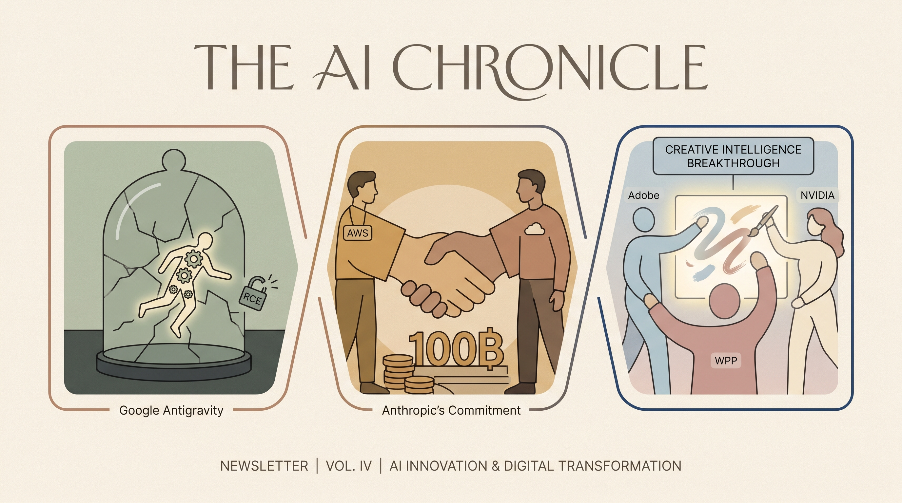

Adobe与NVIDIA、WPP合作，推动AI在创意生产中的应用。
两克伴AIGC日报
2026-04-21 星期二

本期关注：Adobe推出AI客户体验代理平台提升服务智能化，中国科技工作者训练AI替身引发职业反思，同时谷歌AI漏洞、Anthropic千亿投入AWS、英伟达推动制造与机器人智能化等动态凸显AI技术快速迭代下的机遇与挑战。
📰 行业动态
Anthropic承诺未来十年在AWS技术方面投入超1000亿美元。
Google Analytics 4存在盲点，无法准确报告某些用户行为。
Siemens在德国工厂测试NVIDIA驱动的人形机器人。
NVIDIA与合作伙伴展示AI驱动制造的未来。
🔥 今日焦点
Adobe近日推出了一款名为AI Agent Platform的全新平台，旨在通过扩展人工智能客服代理的工作流程来提升客户服务体验。这一举措标志着Adobe在人工智能领域的进一步布局，同时也意味着市场竞争将更加激烈。
AI Agent Platform的核心功能在于通过人工智能技术，实现客户服务的自动化和智能化。该平台能够根据客户需求，自动匹配合适的客服代理，并提供个性化的服务。这不仅能够提高客户满意度，还能降低企业的人力成本。
近年来，中国科技工作者正面临一项前所未有的挑战：他们的上司要求他们训练AI代理以取代自身的工作。这一现象引发了业界广泛讨论，尤其在GitHub上的一项名为“Colleague Skill”的项目中，工人可以利用它“提炼”同事的技能和个性特征，从而复制出AI“替身”。这一趋势不仅对科技工作者产生了深刻的自我反思，也对AI领域的发展产生了重要影响。
这一现象的重要性在于，它揭示了AI技术发展过程中，人类角色与机器角色之间的界限正日益模糊。一方面，AI的进步使得自动化和智能化成为可能，企业寻求通过AI提高效率和降低成本；另一方面，科技工作者开始担忧自己的职业前景，对AI的快速替代感到不安。
📚 深度长文
本文深入探讨了GitHub如何构建一种假设代理已受攻击的安全架构。文章核心观点在于，GitHub并非将安全重心放在防御外部攻击上，而是基于代理已受攻击的假设，构建了一套全面的安全体系。作者通过分析GitHub的安全架构，揭示了其关键论据：在代理已受攻击的前提下，如何通过权限控制、代码审计、安全监控等技术手段，确保代码仓库的安全。
文章具有极高的阅读价值，不仅为AI从业者提供了丰富的安全架构思路，还揭示了GitHub在安全领域的独特见解。作者从多个角度剖析了GitHub安全架构的构建过程，包括代理权限管理、代码审查流程、安全事件响应等，为读者呈现了一个全面、深入的安全架构体系。此外，文章还探讨了GitHub如何利用人工智能技术提升安全防护能力，为AI领域安全研究提供了有益的借鉴。
本文探讨了“无头服务”在个人AI领域的应用前景。作者Matt Webb认为，相较于直接使用服务，个人AI的使用体验更为优越，而“无头服务”则能更快速、更可靠地满足个人AI的需求。他以Salesforce Headless 360为例，指出其通过API将Salesforce、Agentforce和Slack平台的数据、工作流和任务直接暴露给AI，无需浏览器即可实现。如果这种模式得以普及，将对现有技术产生深远影响。本文深入剖析了“无头服务”在个人AI领域的独特见解，对于AI从业者而言，具有极高的阅读价值。
***
《13 Most Important AI Concepts Every Claude User Should Know》一文由Frank Andrade撰写，旨在为Claude用户深入解析人工智能领域的关键概念。文章核心观点在于，掌握这些概念将极大提升用户在使用Claude时的效率和效果。文章详细阐述了包括机器学习、神经网络、深度学习、自然语言处理等在内的13个核心AI概念，并辅以丰富的案例和深入的分析。
关键论据包括对每个概念的起源、发展历程、应用场景以及在实际操作中的重要性进行了详细阐述。文章不仅揭示了这些概念在技术层面的深度，还探讨了它们在商业、教育、医疗等领域的广泛应用。
📄 重点论文
**核心贡献**: 提出了一种结合AI代理、多跳信息检索、推理和综合的深度研究系统，旨在加速基于证据的科学发现，并解决现有系统缺乏证据评估标准的问题。
**与AI Agent的关联**: 该研究通过引入AI代理，增强了证据评估的透明度和可靠性，对AI Agent在医学研究中的应用具有重要意义。
**核心贡献**: 创建了一个名为SocialGrid的具身多智能体环境，用于评估大型语言模型在规划和社交推理方面的能力，并揭示了当前模型在任务完成方面的不足。
**与AI Agent的关联**: 该基准为评估和改进AI Agent在社交和规划任务中的表现提供了重要的工具，对多智能体系统的研究和应用有实际价值。
🛠️ 产品推荐
Show HN：Claude Code并行会话自动生成标题与颜色插件。该插件为每个Claude Code会话添加标题和颜色，帮助用户快速识别不同会话的功能，解决多任务并行操作时难以追踪会话状态的问题。通过AI技术自动生成标题，提高工作效率，适用于技术从业者。
***
Comrade是一款专注于安全的开源AI工作空间，旨在为安全团队提供高效的工作体验。该产品以透明、可扩展和本地优先的原则构建，集成了AI驱动的流程，并拥有优质的界面。Comrade能够帮助用户解决复杂的安全问题，提高工作效率，降低安全风险。其AI能力体现在智能化的工作流程和强大的数据处理能力，为技术从业者提供创新的解决方案。
***
Dunetrace是一款针对AI代理的运行时故障检测工具。该产品通过实时监控AI代理的运行状态，及时发现并定位潜在故障，有效保障AI系统的稳定性和可靠性。Dunetrace的AI能力体现在其强大的故障检测算法和智能分析能力，能够快速识别复杂场景下的异常情况。对于技术从业者而言，Dunetrace能够帮助他们提高AI系统的健壮性，降低故障风险，提升工作效率。
***